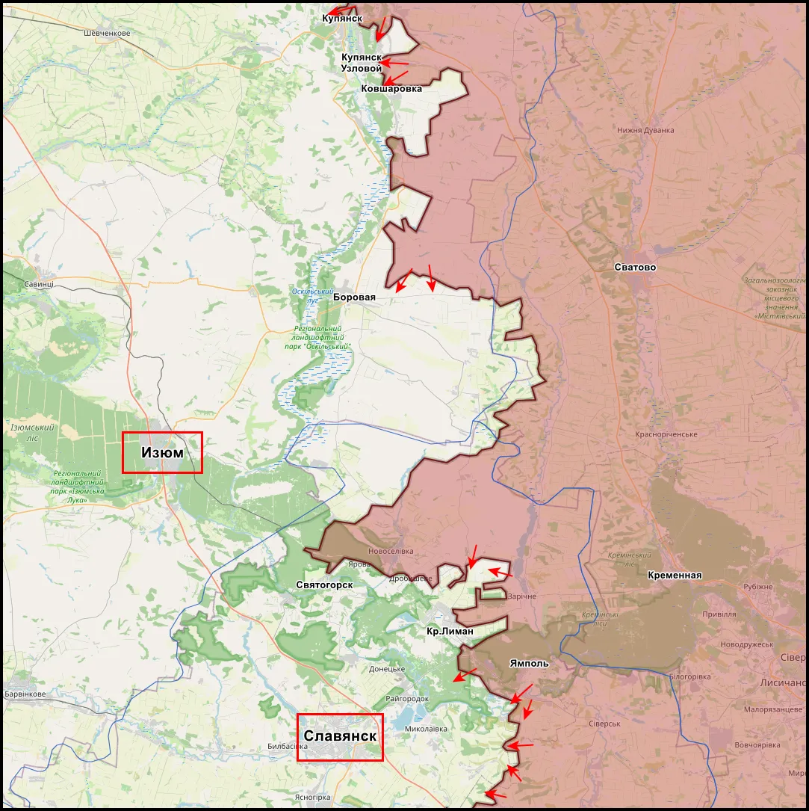
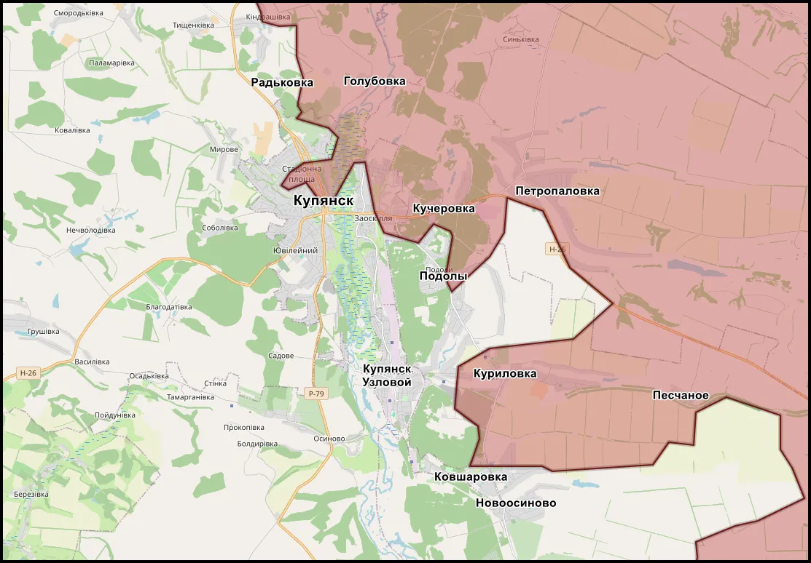
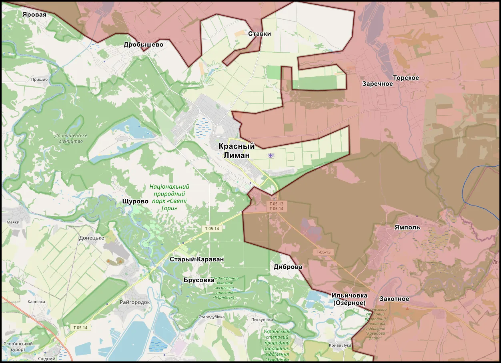
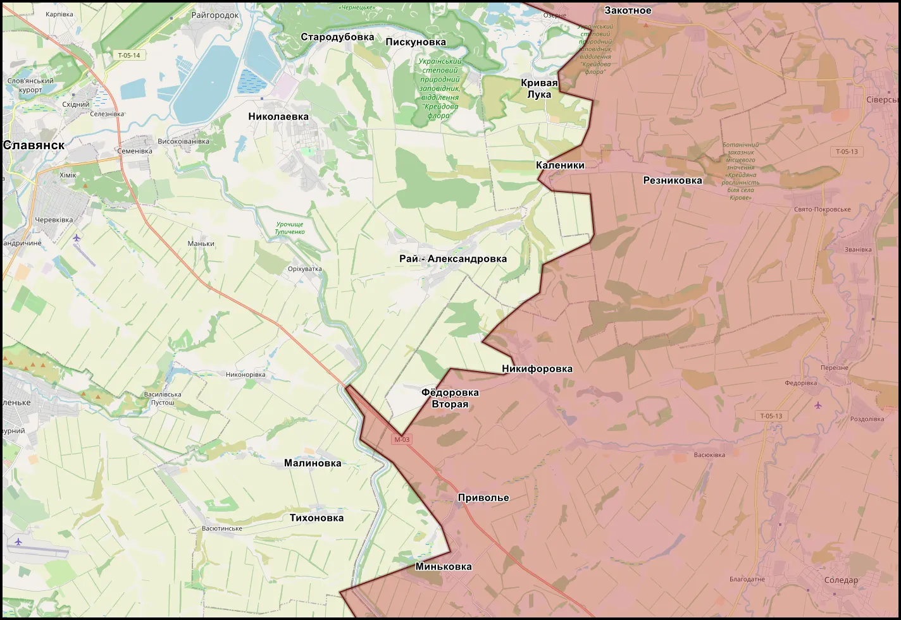
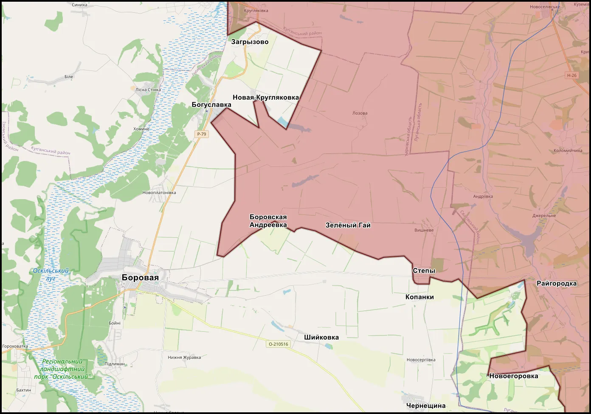

Что произошло на фронте после 24 апреля: сводка СВО за 27 апреля - 4 мая 2026 года

Предыдущая рамка: обзор изменений на фронте после 24 апреля. Связанная оценка: оценка боевых действий СВО за 27 апреля - 3 мая 2026 года. Для понимания географии восточного участка также важен материал о Купянском, Краснолиманском и Славянском направлениях.
Эта сводка основана на открытых сообщениях сторон, OSINT-данных, публикациях с мест, ранее опубликованных материалах KRM РФ и сопоставлении сообщений по нескольким направлениям. Материал не является официальной картой и не фиксирует окончательный статус спорных населенных пунктов. На участках с серыми зонами, городскими боями и действиями малых групп контроль может уточняться по мере появления новых кадров, геопривязок и повторных подтверждений.
Главное за период: после 24 апреля фронт не перешел к крупному оперативному обвалу, но ВС РФ продолжили давление сразу на нескольких участках. Продвижения фиксировались малыми группами, через закрепление в посадках, городской застройке, промышленных объектах, районах дорог, переправ, опорных пунктов и узлов снабжения.
Наиболее заметные изменения пришлись на Купянское, Краснолиманское, Славянское и Константиновское направления. На Покровском, Запорожском, Гуляйпольском, Сумском и Харьковском участках активность также сохранялась, но картина там менее однозначная: часть сообщений указывает на локальные продвижения, часть - на позиционные бои без устойчивого изменения линии фронта.
Коротко: основные изменения
- Купянское направление: усилилось давление в районах Куриловки, Ковшаровки, Петропавловки и Купянска-Узлового. Украинские OSINT-источники также фиксировали продвижение ВС РФ в районе Петропавловки.
- Краснолиманское направление: освобождение Ильичовки (Озерного) стало одним из ключевых подтвержденных изменений периода. Дальнейшая линия внимания - Озерное, Диброва, Ставки и Заречное.
- Славянское направление: сохранялось давление вокруг Закотного, Кривой Луки, Калейников, Пискуновки и Рай-Александровки. Главный вопрос - влияние этих боев на коммуникации севернее Славянско-Краматорской агломерации.
- Константиновское направление: фиксировались удары и продвижение на южном фасе, но статус Долгой Балки и ряда соседних точек требует осторожной оценки.
- Покровское направление: сохранялось давление в районах Гришино, шахтных объектов, терриконов и промышленных зон без признаков быстрого оперативного развития.
- Южные направления: на Запорожском и Гуляйпольском участках продолжались локальные бои, но устойчивость новых позиций требует дополнительной проверки.
- БПЛА: дроны остались главным фактором периода - от переднего края до ударов по логистике, тыловым объектам и гражданской инфраструктуре.
Общая картина: фронт движется малыми участками
Ключевой вывод периода - подтвердился сценарий войны малых продвижений. ВС РФ сохраняют инициативу на ряде участков, но успехи выражаются не в одном резком прорыве, а в постепенном сжатии узлов обороны ВСУ. Такой формат менее зрелищен, но важен для будущей конфигурации фронта: серия локальных изменений может постепенно ухудшать устойчивость обороны на более широком участке.
Если оценивать период без пропагандистского шума, ситуация выглядит так: российские подразделения улучшают тактическое положение, давят на логистику и вынуждают украинскую сторону распределять резервы между несколькими направлениями. ВСУ, в свою очередь, сохраняют способность к обороне, активно применяют БПЛА, проводят контратаки и удерживают ряд серых зон, где заявленный контроль сторон не всегда равен устойчивому закреплению.
Это хорошо совпадает с общей логикой предыдущих оценок KRM РФ: на нынешнем этапе важны не только сами населенные пункты, но и дороги, высоты, переправы, посадки, промышленные объекты, гаражные массивы, терриконы, пункты управления БПЛА и маршруты снабжения.
Купянское направление: давление на город и левобережную логистику

На Купянском направлении период дал несколько взаимосвязанных сигналов. В источниках проходили бои на восточных окраинах Купянска-Узлового, активность в районе Куриловки, расширение зоны боевой работы в городской и пригородной застройке, а также сообщения о продвижении ВС РФ в районе Петропавловки.
Важная деталь - изменение линии контроля в районе Петропавловки фиксировалось не только российскими источниками, но и украинскими OSINT-ресурсами. Для оценки это значимо: когда источники противоположной стороны признают движение линии на чувствительном участке, такой эпизод нельзя рассматривать только как информационную подачу одной стороны.
Смысл происходящего не сводится к одному населенному пункту. Куриловка, Петропавловка, Ковшаровка, Новоосиново и Купянск-Узловой образуют систему давления на купянский узел. Речь идет не только о боях в городской застройке, но и о связке между левым берегом Оскола, железнодорожной инфраструктурой, переправами, дорогами снабжения и возможностью ВСУ удерживать устойчивую оборону вокруг города.
Купянское направление остается сложным для быстрых выводов. ВСУ активно используют БПЛА, артиллерию, мобильные группы и удары по логистике. Поэтому говорить о быстром падении Купянского узла преждевременно. Более точная формулировка: за период усилилось давление на левобережную систему обороны, а Купянск-Узловой и соседние населенные пункты становятся ключевыми маркерами дальнейшей динамики.
Оценка направления: подтверждается расширение боевой активности на купянском участке и усиление давления на систему Куриловка - Петропавловка - Ковшаровка - Купянск-Узловой. Глубина закрепления ВС РФ и устойчивость новых позиций в городской и пригородной зоне требуют дальнейшей проверки.
Краснолиманское направление: Озерное как ключевой факт периода

На Краснолиманском направлении главным событием периода стало освобождение Ильичовки (Озерного). Фиксация российского присутствия в населенном пункте и последующие сообщения о развитии боев в сторону Дибровы и Ставков показывают, что участок остается одним из наиболее активных на северном фланге Донбасса.
При этом важно не подменять факт выводом. Освобождение Озерного не означает автоматического решения всей краснолиманской задачи. Восточнее и северо-западнее Красного Лимана сохраняются серые зоны, лесистая местность, болотистые участки, рассредоточенные позиции и зоны, где контроль меняется не одномоментно, а через длительное закрепление.
По сравнению с рамкой после 24 апреля тенденция стала конкретнее. Давление на Лиманский узел больше не выглядит только как набор отдельных эпизодов. Оно постепенно собирается в линию Озерное - Диброва - Ставки - Заречное, где значение имеют дороги, высоты, лесные массивы, переправы и возможность обхода отдельных опорных районов.
Особенность этого участка - высокая роль малых групп и местности. С наступлением "зеленки" растет значение маскировки, скрытого движения, коротких штурмов, закрепления в посадках и постоянной работы БПЛА. Это снижает вероятность быстрого фронтального прорыва, но повышает значение постепенного расширения серых зон.
Оценка направления: освобождение Озерного можно относить к подтвержденным изменениям периода. Дальнейшая глубина продвижения к Диброве, Ставкам и Заречному требует новых кадров, геопривязок и признаков устойчивого закрепления.
Славянское и Северское направления: давление на фланги и коммуникации

На Славянском направлении в течение периода сохранялось давление на оборону ВСУ с упором на фланги, маршруты снабжения и промежуточные узлы. В источниках проходили Закотное, Кривая Лука, Калейники, Пискуновка и Рай-Александровка. Отдельно фиксировались удары по позициям, пунктам временной дислокации, районам переправ, технике и участкам подвоза.
Рай-Александровка остается одним из ключевых маркеров направления. Если давление вокруг нее будет развиваться, это может ухудшить положение ВСУ не только в одной точке, а на более широком участке севернее Славянско-Краматорской агломерации. Пока это не означает быстрого выхода к Славянску, но показывает смещение боевой активности к более глубокой оборонительной системе.
Дополнительный слой - сообщения о проблемах украинской обороны на соседних участках, включая зависимость от дронов, трудности с ротациями, нехватку подготовленной пехоты и необходимость закрывать локальные кризисы резервами. Эти данные нельзя автоматически переносить на весь фронт, но они помогают объяснить, почему давление на фланги и логистику может давать результат даже без крупных механизированных рывков.
Северское направление в этой связке важно как часть общей системы северного Донбасса. Здесь, как и на Краснолиманском участке, значение имеют не только населенные пункты, но и леса, балки, дороги, переправы, высоты и возможность удерживать отдельные опорные точки под постоянным воздействием БПЛА и артиллерии.
Оценка направления: подтверждается сохранение давления на Славянском и соседних участках. Вероятно, дальнейшее значение будет иметь не скорость продвижения, а способность ВС РФ нарушать снабжение, управление и устойчивость украинских позиций в районе Рай-Александровки, Кривой Луки, Закотного и соседних узлов.
Константиновское направление: продвижение есть, но контроль требует осторожности
На Константиновском направлении источники фиксировали удары по позициям ВСУ в городской черте и на подступах, активность в районах Долгой Балки, Русина Яра, Степановки, а также сообщения о продвижении на южном фасе. Украинские OSINT-ресурсы также отмечали изменения линии в районе Константиновки, что усиливает достоверность общей тенденции.
Именно на этом направлении требуется максимальная осторожность в формулировках. По Долгой Балке и соседним точкам в российских источниках встречались более смелые заявления, но часть оценок указывала, что говорить о полном контроле преждевременно. Для сводки это означает: присутствие штурмовых групп, просачивание, занятие отдельных строений или работа в серой зоне еще не равны устойчивому контролю населенного пункта.
Главное значение направления - не в одном спорном пункте, а в давлении на южный фас Константиновки. Этот участок связан с более широкой системой обороны Краматорско-Славянской агломерации. Поэтому даже локальные изменения южнее города могут создавать нагрузку на соседние рубежи, дороги снабжения и систему управления.
Отдельно важна борьба за пункты управления БПЛА, наблюдение и корректировку. В городской и пригородной зоне без подавления дронов любое продвижение становится дорогим. Поэтому удары по операторам, пунктам управления, складам и маршрутам снабжения становятся не фоном, а одним из условий дальнейшего движения.
Оценка направления: продвижение и удары на направлении подтверждаются несколькими линиями сообщений. Реальный уровень контроля в Долгой Балке и соседних точках требует дополнительной проверки.
Покровское направление: давление без быстрого оперативного развития
Покровский участок продолжает оставаться зоной постепенного давления. Его значение в том, что здесь особенно хорошо видна логика нынешнего этапа: борьба идет за посадки, шахтные объекты, терриконы, промышленные зоны, отдельные дороги и опорные пункты.
После боев за Гришино и соседние участки давление сохранялось в районах Новоалександровки, шахтных позиций и промышленных объектов. FPV-дроны продолжали играть ключевую роль как при попытках движения техники, так и при удержании уже занятых позиций.
На ряде участков ВСУ сохраняли способность стабилизировать линию, проводить контратаки и удерживать важные точки. Но такая стабилизация требует резервов, дронов, подвоза, ротаций и постоянной работы по закрытию локальных кризисов. Поэтому даже без резкого изменения карты нагрузка на оборонительную систему может постепенно расти.
Оценка направления: подтверждается продолжение давления на Покровском участке. Для вывода о крупном оперативном изменении данных недостаточно, но накопление локальных результатов сохраняет значение.
Сумская и Харьковская зоны: приграничное давление и нагрузка на резервы
В Сумской зоне безопасности отмечались новые позиции ВС РФ в районе Кондратовки и Сопыча. По Сопычу отдельно указывалось продвижение до 600 метров по архивному видео, ориентировочно за март 2026 года. Поэтому этот эпизод нельзя ставить в один ряд с оперативными изменениями периода без оговорки.
В Харьковской зоне безопасности сообщалось о выходе ВС РФ на окраины Бочково и боях за жилую застройку. Эти действия пока не выглядят как самостоятельная крупная операция, но сохраняют давление на северные участки и вынуждают украинскую сторону учитывать приграничье как активную линию угрозы.
Значение этих участков не только в продвижении на карте. Даже ограниченная активность в приграничье заставляет ВСУ держать внимание, резервы, БПЛА, артиллерию и логистику на дополнительных направлениях. Это вписывается в общую логику периода: давление распределяется по нескольким зонам, а не концентрируется только в одной точке.
Оценка направления: подтверждается активность и локальное давление. Глубокого изменения конфигурации фронта в Сумской и Харьковской зонах за период не видно.
Южные направления: Запорожье, Гуляйполе и Великая Новоселка
На юге источники отмечали выход ВС РФ к реке Волчья севернее Александрограда, продвижение западнее Мирного, присутствие российских подразделений в Новоселовке, а также активность в районе Гуляйполя, Малой Токмачки и Новоданиловки.
Южный участок остается более подвижным и менее однозначным, чем ряд северных направлений. Здесь отдельные продвижения могут быстро сменяться контратаками, а контроль над посадками, окраинами, высотами и отдельными зданиями требует постоянного подтверждения. Поэтому корректнее говорить не о резком переломе, а о продолжении давления и проверке обороны ВСУ на нескольких направлениях.
На Запорожском и Гуляйпольском направлениях особенно заметна зависимость фронта от БПЛА, разведки, связи и способности удерживать малые позиции. Сам факт захода или локального продвижения важен, но окончательное значение он получает только после закрепления, подвоза, ротации и отражения возможных контратак.
Оценка направления: вероятны локальные продвижения ВС РФ на отдельных южных участках. Для вывода о крупном изменении оперативной обстановки данных недостаточно.
БПЛА, логистика и тыловые удары

Как и в предыдущих обзорах, дроны остаются одним из главных факторов фронта. За период фиксировались FPV-удары по технике и позициям, дроновые засады в городской среде, удары по инфраструктурным объектам, пунктам управления, складам, маршрутам снабжения и тыловым районам.
Отдельно стоит отметить удар барражирующим боеприпасом по резервуару на топливохранилище в районе Днепропетровска, на удалении более 80 км от зоны активных боевых действий. Этот эпизод показывает, что война дронов и высокоточных ударов не ограничивается передним краем. Под воздействием находятся топливо, склады, логистика и инфраструктура.
В ЛНР за период продолжались удары БПЛА по гражданским объектам и инфраструктуре. Кременная и район вокруг нее остаются отдельной зоной риска. Эта тема ранее разбиралась в материале "Кременная под дронами: как изменилась жизнь в городе".
Главный вывод по БПЛА: дроны уже не являются отдельным элементом войны. Они стали средой, в которой идут штурмы, ротации, снабжение, разведка, удержание позиций и удары по тылам. Любая колонна, перемещение техники или попытка подвоза быстрее обнаруживаются и становятся целью. Поэтому обе стороны всё чаще используют малые группы, скрытое движение, ночные перемещения и рассредоточение.
Что подтвердилось после 24 апреля
- Позиционный характер фронта. Крупного оперативного обвала не произошло, но линия продолжает двигаться малыми участками.
- Рост роли БПЛА. Дроны определяют темп штурмов, логистику, ротации, городские бои и удары по тылу.
- Давление на узлы обороны. Купянск, Красный Лиман, Славянск и Константиновка остаются не отдельными точками, а частями системы из дорог, высот, переправ, населенных пунктов и логистических маршрутов.
- Значение серых зон. Многие сообщения о продвижении требуют проверки на устойчивое закрепление.
- Распределение нагрузки. Активность сохранялась не только на одном направлении, а сразу на восточном, северном, южном и приграничном участках.
Что не подтвердилось
- Не подтвержден переход к масштабному фронтовому прорыву.
- Не подтверждено быстрое обрушение всей обороны ВСУ на Купянском, Краснолиманском или Славянском направлениях.
- Не все заявления о контроле населенных пунктов можно считать окончательными: часть эпизодов остается в категории присутствия, просачивания или серой зоны.
- Не видно достаточных данных для вывода о крупном оперативном переломе на южных направлениях.
Что мониторить дальше
- Купянск-Узловой, Куриловка и Ковшаровка: будет ли давление превращаться в устойчивое нарушение левобережной логистики ВСУ.
- Озерное - Диброва - Ставки: появятся ли новые подтвержденные геопривязки продвижения и закрепления.
- Рай-Александровка: сможет ли ВС РФ выйти к коммуникациям и создать угрозу более широкому участку обороны севернее Славянска.
- Константиновка и Долгая Балка: нужно отделять реальный контроль от присутствия штурмовых групп и работы в серой зоне.
- Гришино, терриконы и шахтные позиции: важно отслеживать способность сторон удерживать позиции под постоянным воздействием FPV-дронов.
- Запорожское и Гуляйпольское направления: требуются повторные подтверждения устойчивости новых позиций.
- БПЛА и логистика: плотность ударов по маршрутам снабжения, пунктам управления дронами, складам, топливу и тыловой инфраструктуре остается ключевым индикатором следующего этапа.
Подтверждено / Вероятно / Требует подтверждения
Подтверждено
- Крупного оперативного обвала фронта за период 27 апреля - 4 мая 2026 года не зафиксировано.
- Боевые действия сохраняют позиционный характер, а продвижение на большинстве активных участков идет малыми группами.
- Освобождение Ильичовки (Озерного) можно относить к подтвержденным изменениям периода.
- На Купянском направлении фиксируется расширение боевой активности в районах Куриловки, Петропавловки, Ковшаровки и Купянска-Узлового.
- Роль БПЛА продолжает расти: дроны влияют на разведку, поражение техники, логистику, ротации, снабжение и удары по тыловым районам.
- Оборона ВСУ сохраняет способность к сопротивлению, контратакам и стабилизации отдельных участков, поэтому выводы о полном обрушении фронта преждевременны.
Вероятно
- Давление ВС РФ на нескольких направлениях постепенно увеличивает нагрузку на украинскую оборонительную систему.
- Купянский участок переходит от локальных городских боев к более широкому давлению на левобережную логистику и Купянск-Узловой.
- Краснолиманская линия всё больше собирается вокруг направления Озерное - Диброва - Ставки - Заречное.
- Рай-Александровка может стать одним из ключевых маркеров дальнейшего давления на Славянском направлении.
- Константиновское направление может получить большее значение, если давление южнее города начнет влиять на устойчивость всей агломерационной обороны.
- Южные направления могут использоваться для расширения нагрузки на резервы ВСУ даже без немедленного глубокого продвижения.
Требует подтверждения
- Глубина закрепления ВС РФ у Дибровы, Ставков и Заречного.
- Реальный уровень контроля в Долгой Балке и соседних точках Константиновского направления.
- Устойчивость новых позиций в городской черте Купянска и на подступах к Купянску-Узловому.
- Масштаб продвижения на Запорожском, Гуляйпольском и других южных участках.
- Степень истощения украинских резервов на каждом отдельном направлении.
- Возможность перехода от серии тактических продвижений к более крупному оперативному изменению обстановки.
Итог
Период после 24 апреля подтвердил главный вывод предыдущего обзора: фронт меняется не одним рывком, а накоплением малых тактических результатов. ВС РФ сохраняют инициативу на Купянском, Краснолиманском, Славянском и Константиновском направлениях, но каждое продвижение требует закрепления, повторной проверки и оценки устойчивости.
Главное на следующий этап - следить не за громкими заявлениями, а за геопривязками, устойчивым закреплением, изменением маршрутов снабжения, расширением серых зон, ударами по пунктам управления БПЛА и способностью сторон удерживать позиции после первичного продвижения.
Ключевой вывод: к 4 мая 2026 года признаков быстрого фронтового обвала нет, но давление на оборонительную систему ВСУ накапливается сразу на нескольких направлениях. Если эта динамика сохранится, май может стать не месяцем одного большого прорыва, а периодом постепенного изменения конфигурации фронта через серию локальных кризисов.